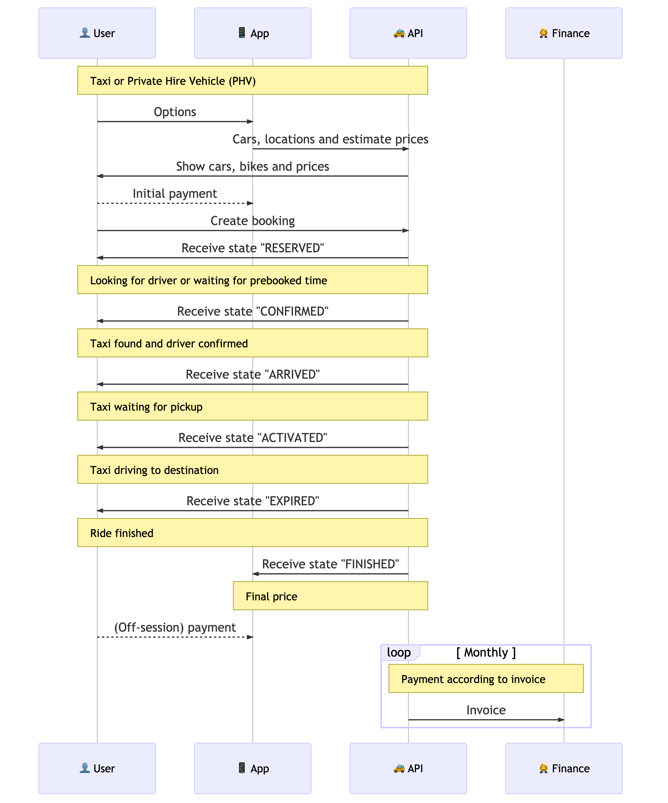
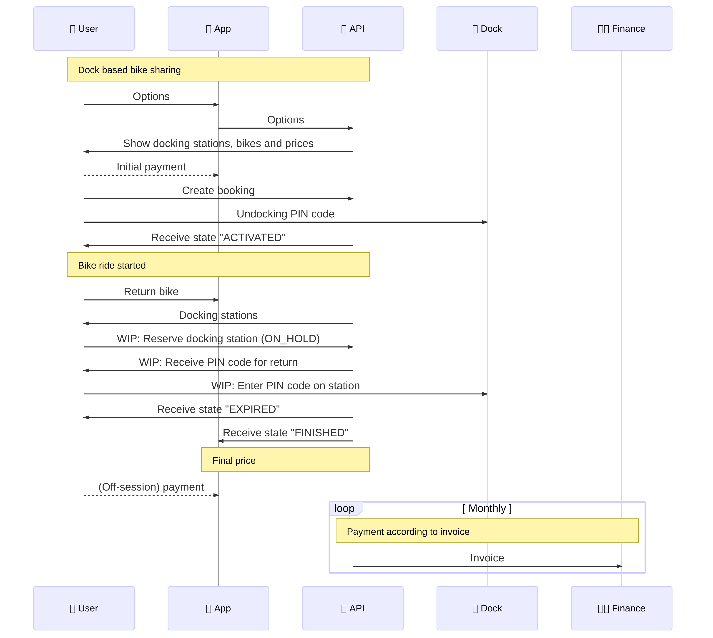
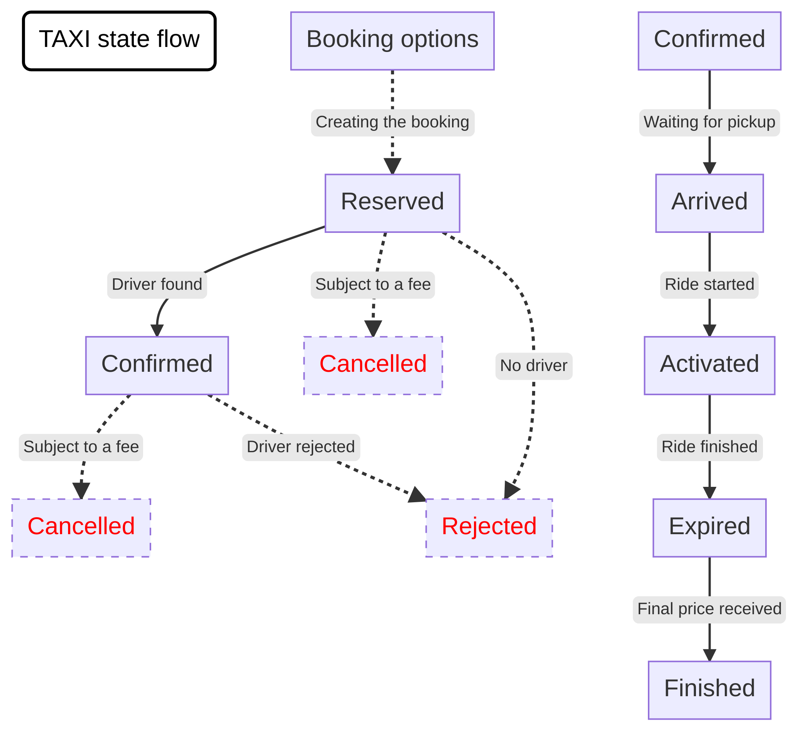
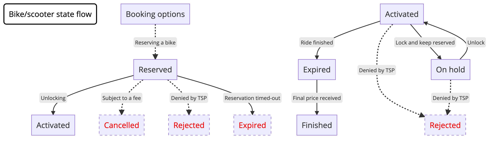
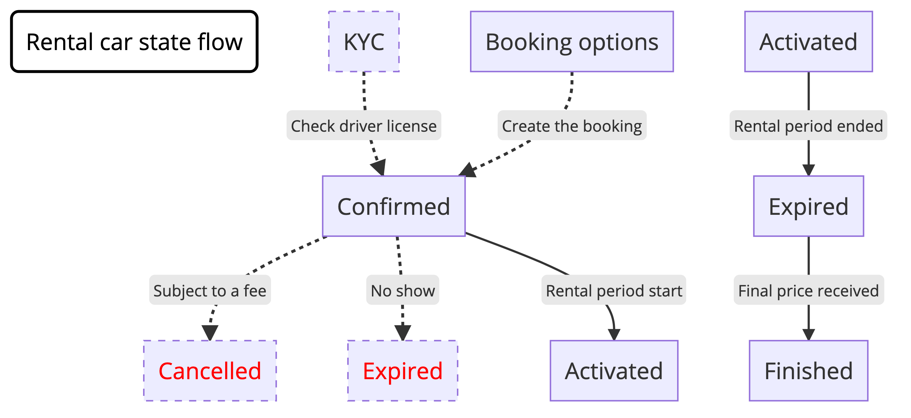
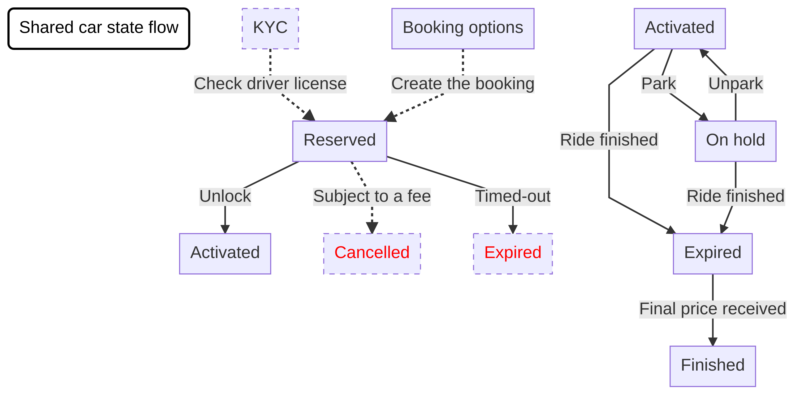
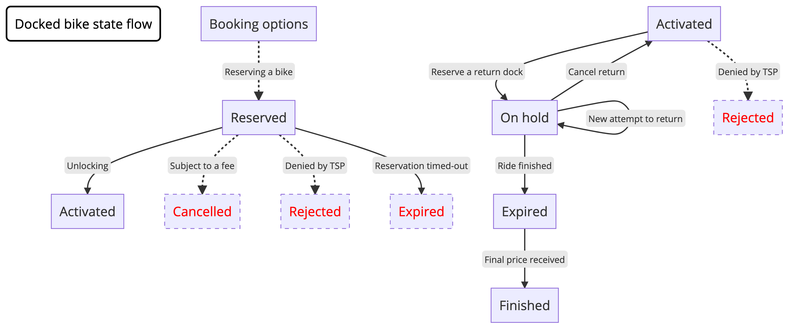

Overview of resources available from MaaS Global, creators of WhimApp.
This is an API specification of REST endpoints that a Transport Service Provider (TSP) should implement to offer their services through the WhimApp.
Based on JSON Schema standard, defines schema definitions for information exchanged between WhimApp and TSP.
These diagrams show how User, WhimApp and TSP interact to perform booking with various modes of transportation (Taxi, Bike, etc)


These diageams show the state transition for booking when journey is in progress.

Also compatible with scooter and other micromobility providers.



⚠️
On holdstate for docked bikes only supported in version v.1.2.0-future which is not yet deployed to production.

See the repository for JSON examples of data exchanged between WhimApp and TSP